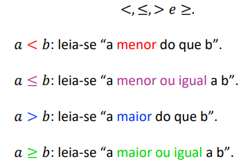

Números Naturais
O primeiro conteúdo referente a conjuntos numéricos e intervalos apresentado para nós foram os Números Naturais
Os números naturais são representados por: 0, 1, 2, 3, 4, 5, 6, 7, 8, 9,...
O primeiro número natural sera o zero, logo após vem o um, dois, três, e assim por diante. Esse é um conjunto infinito, já que podemos sempre obter um sucessor de um número natural. Para obter tal sucessor basta somarmos um ao número natural, assim podendo repetir-se infinitamente.
Números Inteiros
Logo após vermos os números naturais aprendemos sobre os números inteiros.
Os números inteiros podem ser tanto negativos quanto positivos, Uma representação seria por exemplo: ..., -3, -2, -1, 0, 1, 2, 3, ...
Os números naturais, por exemplo, são um sub conjunto dos números inteiros. Sendo eles o zero e números positivos, no caso todos acima de zero.
Nos números inteiros também temos outros conjuntos, os números não negativos, por exemlo, são os naturais, números não positivos são qualquer número que seja zero ou abaixo.
Simétricos e Opostos
Simétricos ou opostos são números que estão a mesma distância de zero, por exemplo, o Simétrico ou oposto de +6 é -6, o de +3 é -3.
O resultado da operação de simétricos sempre resultará zero. Isso ocorre de acordo com a régra dos sinais, sendo um exemplo disso 3+(-3), + com - é -. Então 3-3=0.
Números Racionais
Os números racionais são o conjunto de números inteiros mais todas as frações, então todas as frações que possuem numerador e denominador inteiros, sendo o denominador diferente de zero, fazem parte do conjunto de números racionais
A reprsentação simbólica seria a seguinte:
ℚ = {𝑥 | 𝑥 =
𝑎
𝑏
, 𝑐𝑜𝑚 𝑎 ∈ ℤ, 𝑏 ∈ ℤ 𝑒 𝑏 ≠ 0}
Frações com denominador 1 ou frações aparentes são na verdade números inteiros, então podemos concluir que números inteiros e números reais são subconjuntos dos racionais
Números Mistos
Representam frações impróprias, que são aquelas que possuem o numerador maior que o denominador
A seguir deixarei uma representação da conversão de números mistos para frações impróprias, a partir de adição e divisão

Exemplo retirado do conteúdo disponibilizado pela professora
Números Irracionais
Números irracionais são números que não podem ser representados por números finitos ou dízimas periódicas, um exemplo de número irracional seria a raiz quadrada de dois, não há um número que multiplicado por ele mesmo resulta em dois.
Um conjunto de irracionais não contém núm conjunto de racionais, dada vez que se um número é racional não vai ser irracional.
Números Reais
Números reais são a junção de números racionais e números irracionais.
Desigualdade de números reais

Imagem retirada dos slides da professora
Números Complexos
Pelo que entendi, números complexos seriam os resultados de expressões que não tem um resultado em número real, um exemplo seria que nenhum número elevado ao quadrado resulta em um ou número negativo.
Intervalos Reais
Para mostrar os Intervalos Reais, irei utilizar os exemplos disponibilizados pela professora.


Voltar para página inicial